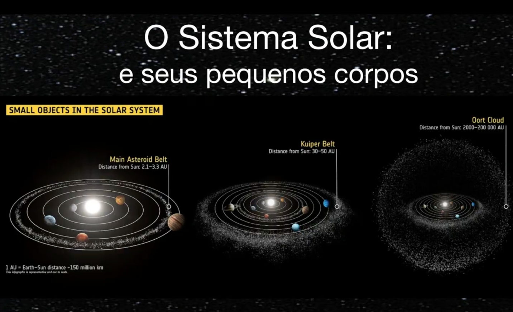
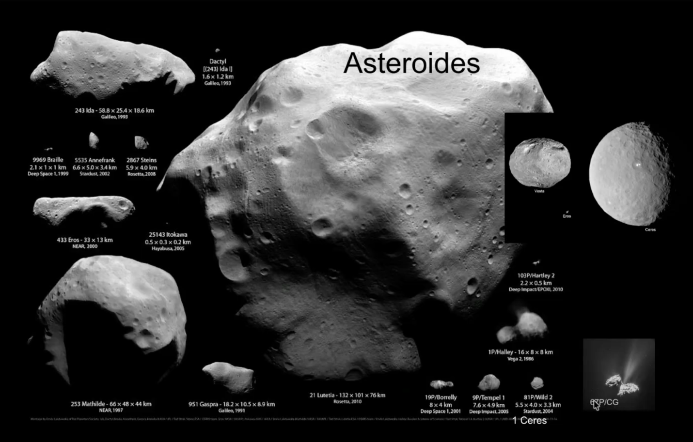
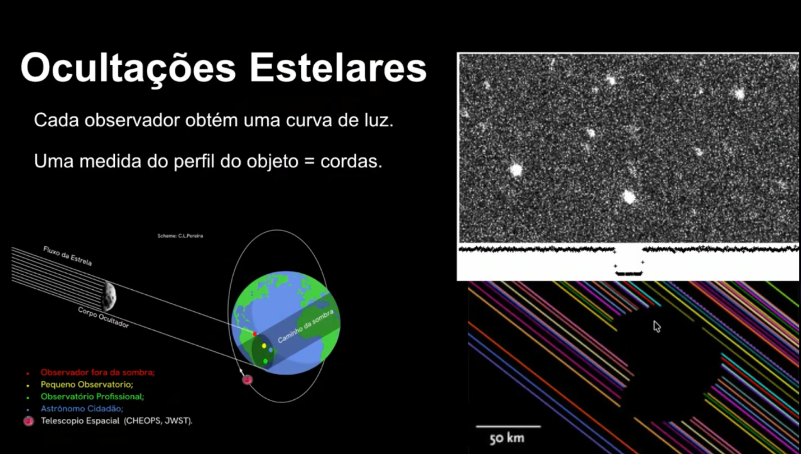
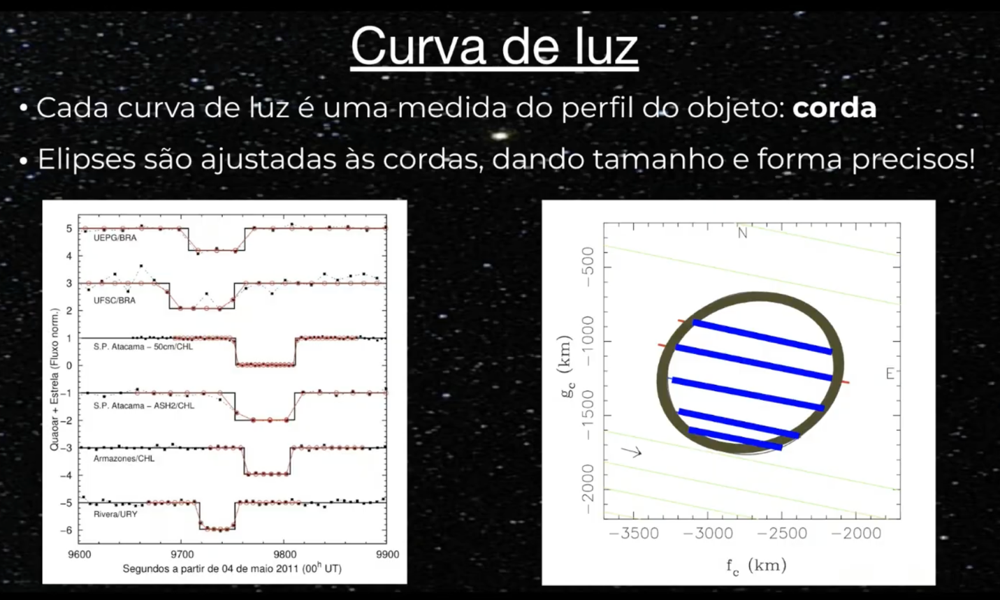
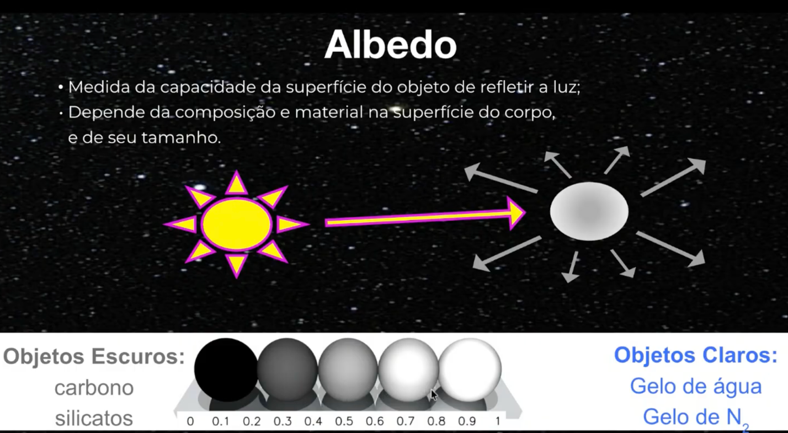
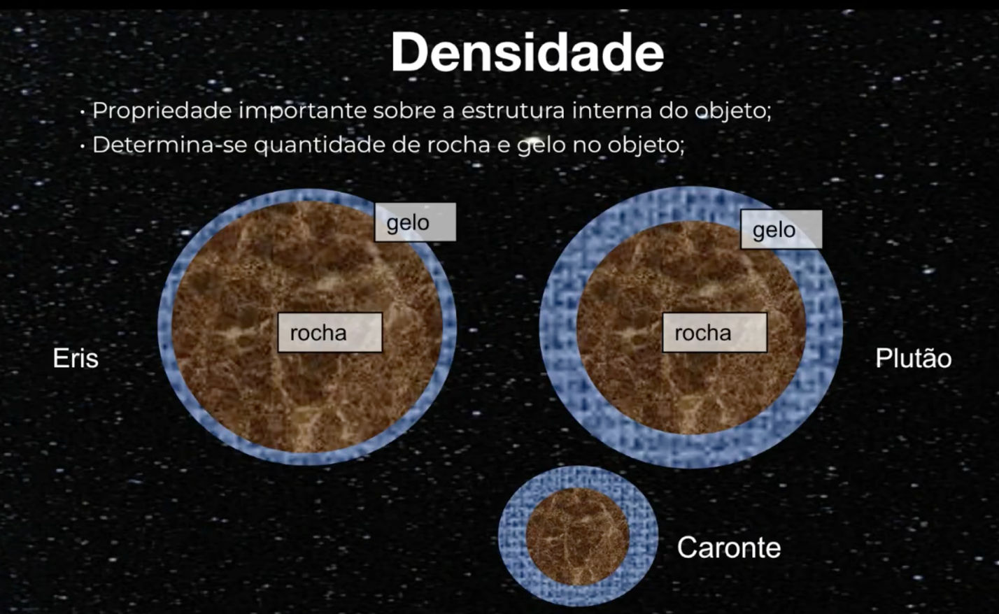
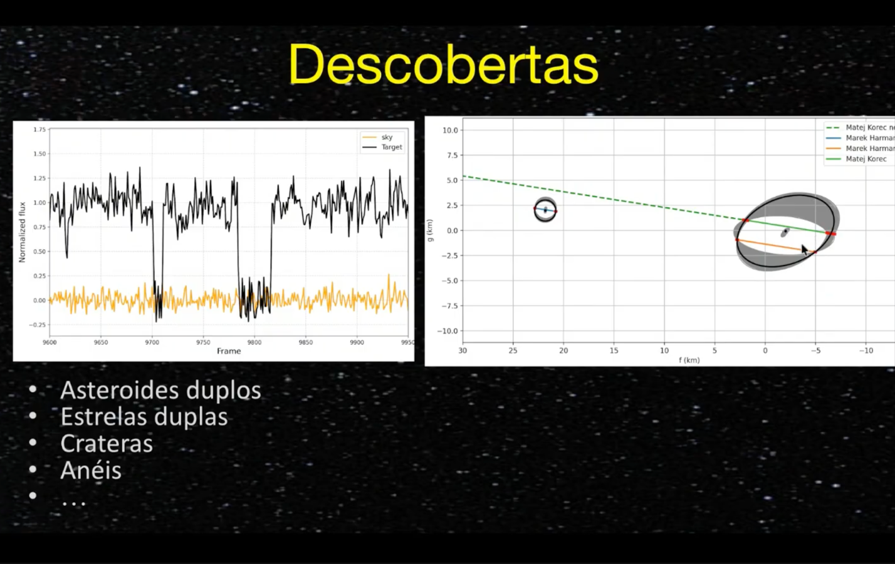
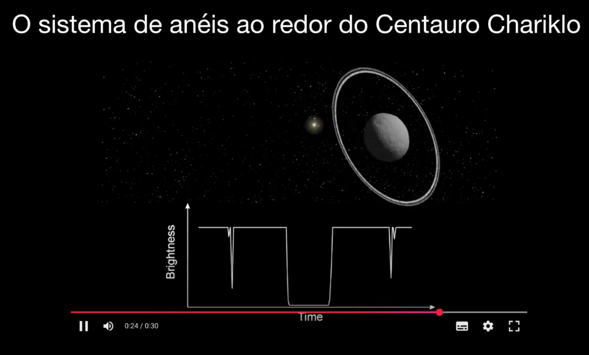
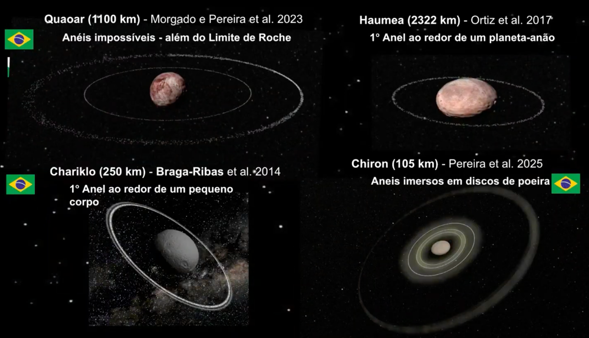

Nanotelescópios para ciência e divulgação
Uma rede trinacional de nanotelescópios integrando ciência, educação e ciência cidadã.
🇧🇷 Brasil · 🇨🇱 Chile · 🇦🇷 Argentina | Dados abertos · Ciência cidadã📡 Metas & Impacto
Monitoramento de variabilidade estelar, movimentos próprios em aglomerados abertos, paralaxe de asteroides e ocultações estelares.
Formação de estudantes e professores, com materiais didáticos e oficinas práticas de astronomia.
Qualquer pessoa com um nanotelescópio pode contribuir. As observações são enviadas para um hub central, reduzidas e disponibilizadas à comunidade.
🔭 O telescópio Seestar S50
Abertura de 50 mm, câmera CMOS com filtro IRCUT. Opera em modo Alt-Az ou equatorial (com cunha). Sensibilidade similar ao filtro BP do Gaia, permitindo fotometria precisa até magnitude 13.
Curvas de luz (variabilidade estelar), posições precisas (astrometria) e movimentos próprios.
Plataforma online: https://andromeda.cbpf.br:5001 (em desenvolvimento). Envie seus frames, receba dados calibrados e acesse curvas de luz.
📊 Aglomerados abertos e movimentos próprios
Com um nanotelescópio podemos medir movimentos próprios de estrelas em aglomerados abertos, identificando membros e estudando a dinâmica da Via Láctea.
✅ O que já fizemos
Adquiridos e em fase de testes, distribuídos entre instituições parceiras.
Infraestrutura de processamento e armazenamento em nuvem, com pipeline de redução automática.
Scripts para operação remota e agendamento de observações, integrados com o hub.
Objetivos ...
O Projeto Nanotelescópios utiliza telescópios inteligentes (atualmente ZWO Seestar 50) para pesquisa, educação e divulgação em Astronomia, criando ferramentas e atividades para ajudar diferentes públicos a usar facilmente os telescópios, coletar dados, aprender sobre diferentes tópicos de Astronomia, Física e Matemática e/ou ajudar astrônomos a publicar artigos científicos.
O plano original consistia em dedicar um conjunto de nanotelescópios (cerca de 10 deles) para um levantamento da variabilidade de objetos celestes observados em nossa Galáxia. Outro conjunto de telescópios (outros 10 ou mais) será dedicado à realização de observações por astrônomos amadores e profissionais, ou até mesmo por estudantes ou pelo público em geral (orientados por astrônomos profissionais). O plano inicial de um projeto piloto de ciência cidadã foi iniciado com um número pré-selecionado de alvos de interesse científico escolhidos por nossa equipe (que atualmente são: estrelas variáveis, asteroides, aglomerados abertos, trânsitos). As iniciativas são coordenadas por astrônomos profissionais de diferentes universidades no Brasil, Argentina e Chile.
O principal objetivo de ambas as iniciativas: o levantamento da variabilidade da Galáxia e o projeto de ciência cidadã, é coletar dados que possam ser úteis para o avanço científico e a publicação de artigos, ao mesmo tempo em que servem a propósitos educacionais e de divulgação.
A área a ser coberta pelo primeiro grupo de cerca de 10 telescópios é de 600 graus quadrados do céu, selecionados a partir de campos já observados pelo telescópio robótico brasileiro T80-South e pelo levantamento Southern Photometric Local Universe Survey (S-PLUS). Os campos serão centrados no sistema de coordenadas equatoriais em AR=90° e DEC=−30° para o bojo, e AR=110° e DEC=−30° para o disco de nossa Galáxia. Se esses campos se mostrarem muito povoados para o tamanho de pixel do Seestar 50 (2,4 segundos de arco por pixel), adaptaremos os alvos.
O Projeto Nanotelescópios visa aumentar a visibilidade pública da Astronomia e gerar interesse no uso de telescópios e na exploração mais profunda de tópicos astrofísicos de maneira envolvente, potencialmente atraindo jovens para o estudo da ciência. Também busca aproximar as comunidades do Brasil, Chile e Argentina neste projeto piloto, que é de interesse para astrônomos dos três países. Se for bem-sucedido, a escala e o alcance do projeto serão ampliados no futuro, em particular para escolas no Brasil.
O Projeto Nanotelescópios faz parte de uma iniciativa maior para instalar um telescópio de 2 m no Cerro Tololo Inter-American Observatory, cujo principal objetivo será o acompanhamento de fontes descobertas pelo Vera Rubin Observatory.
Do ponto de vista da educação científica, estudantes podem aprender e desenvolver habilidades em processamento de imagens, análise de dados e nos fundamentos da operação de telescópios. A experiência com formatos digitais de dados, como imagens .fits, expõe os usuários a condições semelhantes às encontradas em pipelines profissionais de processamento de dados, aproximando-os das práticas e métodos utilizados em cenários reais. Com o treinamento adequado, estudantes e professores podem se engajar em temas de pesquisa que oferecem oportunidades únicas.


Duas imagens de um mesmo nanotelescópio. Fonte: https://www.seestar.com/products/seestar-s50.
Em resumo, os nanotelescópios oferecem uma excelente relação custo-benefício, e sua facilidade de uso os torna adequados para fins educacionais e de divulgação, bem como para tópicos científicos focados. Acreditamos que eles fornecerão a estudantes e professores ferramentas que antes eram reservadas apenas para profissionais.
o que observamos
como e para e com quem conversamos
Fundamentos de Astronomia
...
Ocultações estelares
As observações de fenômenos transitórios, como ocultações estelares, são extremamente importantes para o estudo dos pequenos corpos do Sistema Solar. O Sistema Solar possui diversas regiões povoadas por asteroides e outros objetos, como o Cinturão Principal de Asteroides e o Cinturão de Kuiper. O estudo dessas populações fornece pistas fundamentais sobre a formação e a evolução do Sistema Solar.

Legenda da imagem.
Os asteroides, na maioria das vezes, aparecem em imagens como simples pontos de luz. Devido ao seu pequeno tamanho e à grande distância, não é possível observar diretamente suas formas a partir da Terra com telescópios comuns. As imagens detalhadas que mostram suas superfícies geralmente são obtidas por missões espaciais (sondas).

Legenda da imagem.
Que propriedades físicas destes objetos podemos descobrir?
Determinar a forma desses objetos, especialmente os chamados objetos transnetunianos, é um grande desafio, pois eles ocupam uma região muito pequena no céu.
Uma das formas mais eficazes de estudar esses objetos é por meio das ocultações estelares. Esse fenômeno ocorre quando um asteroide passa em frente a uma estrela, bloqueando temporariamente sua luz. Essa “sombra” projetada pelo objeto pode ser observada na Terra. Ao registrar o instante em que a estrela desaparece e reaparece, conseguimos medir a duração da ocultação.
Uma das formas mais eficazes de estudar esses objetos é por meio das ocultações estelares. Esse fenômeno ocorre quando um asteroide passa em frente a uma estrela, bloqueando temporariamente sua luz. Essa “sombra” projetada pelo objeto pode ser observada na Terra. Ao registrar o instante em que a estrela desaparece e reaparece, conseguimos medir a duração da ocultação.

Legenda da imagem.
Quanto maior o número de observações distribuídas geograficamente, mais preciso será o cálculo do tamanho e da forma do asteroide. Esse método permite reconstruir o perfil do objeto com boa precisão.

Legenda da imagem.
Por exemplo, já foram realizados estudos em que o tamanho de um asteroide foi determinado com base em observações feitas em diferentes pontos do sul da América do Sul, combinando os dados de vários observadores.
Além do tamanho e da forma, também é possível estimar o albedo do objeto, que é a fração de luz refletida por sua superfície.

Legenda da imagem.
Combinando o albedo com outras medições, podemos inferir propriedades físicas importantes, como a composição superficial.
Em alguns casos, quando há informações adicionais (como massa estimada, por exemplo, a partir da presença de satélites naturais), é possível também calcular a densidade do objeto, o que fornece pistas sobre sua estrutura interna (se é rochoso, metálico ou mais poroso).

Legenda da imagem.
Ainda mais!
As ocultações estelares também podem levar a descobertas surpreendentes. Em certas situações, observa-se mais de uma queda de brilho durante o mesmo evento, indicando que dois objetos passaram em frente à estrela — o que pode levar à descoberta de novos asteroides.

Legenda da imagem.
Além disso, esse tipo de observação pode revelar a existência de estrelas duplas, quando a luz da estrela desaparece em etapas, indicando que há duas fontes próximas sendo ocultadas separadamente.
Outro resultado fascinante é a detecção de anéis ao redor de asteroides. Pequenas quedas de brilho antes e depois da ocultação principal podem indicar a presença de material orbitando o objeto, formando sistemas de anéis — algo que antes se pensava existir apenas ao redor de planetas gigantes.

Legenda da imagem.
Várias descobertas foram feitas no Brasil:

Legenda da imagem.
Embora desafiador, a observação de trânsitos de exoplanetas que causam uma diminuição no brilho da estrela hospedeira da ordem de alguns por cento também é factível, pois existem estrelas hospedeiras que podem ser visíveis a olho nu! Aqui, a natureza desafiadora dessas observações oferece uma oportunidade de explorar os limites das capacidades de telescópios como o S50.
Com agendamento cuidadoso e fotometria diferencial, observadores amadores e estudantes podem detectar sinais de trânsito, contribuindo para o refinamento de efemérides e até mesmo descobrindo novos trânsitos ao redor de estrelas brilhantes do sul.
O periastro de eta Carinae 2025.7
Eta Car é uma das estrelas mais luminosas do Universo local. É observada desde o século XVII e apresentou características surpreendentes desde então. Descobriu-se que é uma binária massiva interagente com longo período (P=2022d) e excentricidade extremamente alta (e=0,94). Ela passará pelo periastro no final de setembro de 2025 e os dados mais importantes a serem obtidos serão a fotometria em banda V (V~4,0). Esse grande brilho e o fato de a estrela cruzar o meridiano ao meio-dia em 1º de setembro tornam-na um alvo difícil, no entanto as observações são viáveis a partir do sul do Brasil, Argentina e Chile. A precisão melhor que 0,01 mag (facilmente alcançada com dezenas a centenas de imagens) é necessária porque o pico a ser monitorado tem amplitude de ~0,25 mag. Há uma estrela de comparação (HD303308 V=8,15) a 1 minuto de arco ao norte. O período crítico é de 15/ago a 15/set, o que exige amostragem diária. Nosso objetivo é obter dezenas de pontos de dados durante os crepúsculos astronômicos (vespertino e matutino). O pico fotométrico não é explicado por nenhum modelo existente do sistema. Mostrou-se que ele atinge uma amplitude maior a cada periastro e que o pico se desloca a uma taxa de 1 dia mais cedo por órbita. O cenário possível é que seja causado por uma mancha brilhante na "superfície" da estrela primária, iluminada/aquecida pela estrela secundária quando elas se aproximam. As estrelas possivelmente estão se aproximando uma da outra a uma taxa rápida (órbita instável?!), de modo que uma fusão estelar possa ocorrer em alguns séculos (outra Erupção Gigante como em 1847?). Um grande evento iminente no céu como este exige a atenção de toda a humanidade, mesmo que não ocorra em nossa vida. Este objeto receberá atenção da imprensa mundial por ocasião do periastro, provavelmente chamando a atenção do público para a campanha de monitoramento que estaremos realizando.
Estrelas jovens devem estar próximas de seus locais de nascimento e ter velocidades ainda muito semelhantes às iniciais. Nesse contexto, os movimentos próprios estelares são fundamentais para distinguir membros do aglomerado de estrelas de campo. Por exemplo, ao traçar um diagrama vetorial de movimentos próprios, pode-se distinguir facilmente as estrelas que compartilham um movimento comum (membros do aglomerado) daquelas com movimentos aleatórios (estrelas de campo). Além disso, combinando os movimentos próprios dos membros do aglomerado com informações adicionais (por exemplo, paralaxe e velocidade radial), pode-se reconstruir o movimento 3D e a história de formação do aglomerado na Galáxia.
...
⚙️ Como funciona?
Seestar S50 em ação
O telescópio usa abertura de 50 mm, sensor CMOS integrado e derrotador de campo embutido. Com uma cunha, opera em modo equatorial para fotometria de longa exposição. O pipeline automatizado reduz quadros escuros/planos e realiza astrometria WCS via Gaia DR3.
Astrometria e movimentos próprios
Medindo centroides ao longo de épocas, alcançamos precisão subpixel. Combinando com catálogos do Gaia, calculamos movimentos próprios com uma linha de base temporal estendida, identificando membros de aglomerados e sistemas binários.
Ciência de aglomerados abertos
Observamos aglomerados abertos do sul, empilhamos exposições e derivamos fotometria. A membresia é atribuída via diagramas vetoriais. O S50 resolve os pontos de virada da sequência principal para aglomerados com menos de 1 Gyr.
Curvas de luz e variabilidade
A fotometria diferencial com estrelas de comparação fornece precisão de milimagnitudes. Algoritmos automatizados de busca de período identificam estrelas variáveis e eventos transitórios como surtos cataclísmicos ou ocultações asteroides.
👥 Equipe Nanotelescópios
Pesquisadores, professores e colaboradores do Brasil, Chile e Argentina.
📬 Participe & Contato
Recursos
- 🔗 Hub de Dados (envio/redução)
- 📘 Tutorial: como operar o Seestar S50 (*aqui*)
- 🐙 Scripts de automação no GitHub
- 📄 Publicações e relatórios (em breve)
Este projeto é financiado por agências de fomento dos três países e conta com o apoio de diversas universidades.